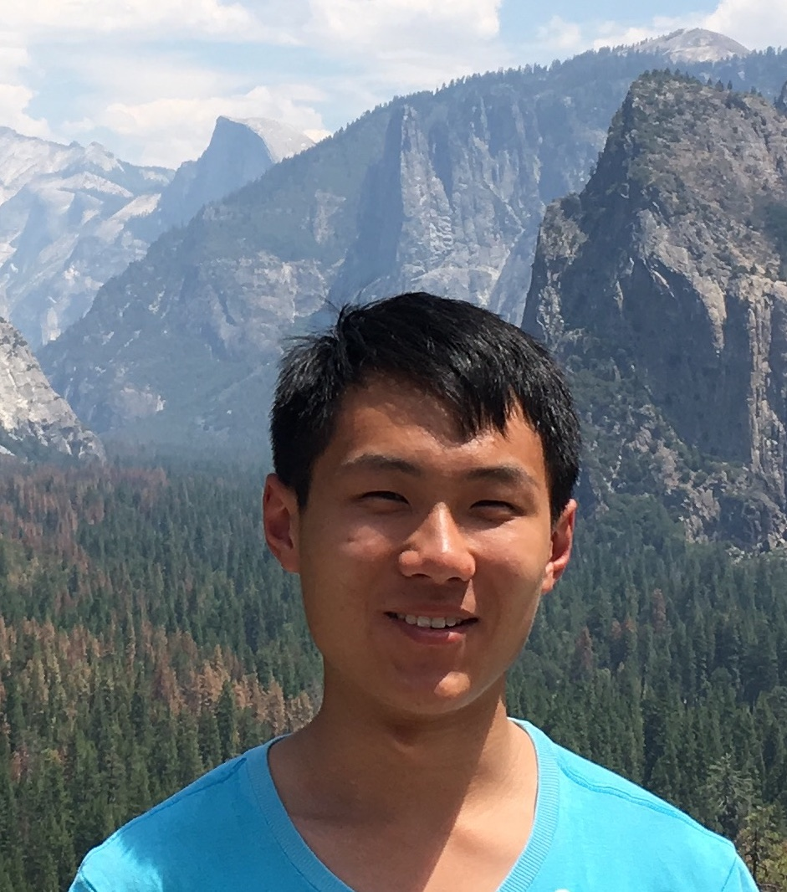

I am currently studying Computer Science and Mathematics at Carnegie Mellon University, with a focus on machine learning and probability theory. I am very fortunate to have been advised by Professor Min Xu from Computational Biology Department.
Github Page
Google Scholar page
Resume
kaiwenw1 [at] cs.cmu.edu
- Junior Research Project for 15-300/15-400
- Random Graphs Visualizer: I took a course in random graphs and wanted to see the evolution of random graphs.
-
Image-derived generative modeling of pseudo-macromolecular structures - towards statistical assessment of electron cryotomography template matching.
Wang K, Zeng X, Liang X, Huo Z, Xing E, Xu M.
British Machine Vision Conference (BMVC) 2018.
- Carnegie Mellon University
Bachelor of Science in Computer Science and Mathematics, May 2020
CS Coursework: Machine Learning, CS Theory, Distributed Systems, Algorithms
Math Coursework: Convex Geometry, Random Graphs, Real Analysis, Probability Theory, Linear Algebra, Abstract Algebra
INDUSTRY EXPERIENCE
- Machine Learning Intern at Datavisor Inc., Mountain View, CA.
- Implemented automated quality monitoring system for core unsupervised machine learning (UML) with general clustering and seasonality-agnostic anomaly detection for time-series data.
- Deployed the quality monitoring project as a Web app written in NodeJS using Express and D3.
PUBLICATIONS
-
Please visit the publications page.
AWARDS
- First Place in CMU's Annual Mobile Robot Competition, Apr 2018